SpeakWise — Walkthrough Guide
Institution-ready AI oral examination platform
1 Open SpeakWise and choose "Student"
A calm entry screen. Pick the Student path to reach your institution, courses, and interview history.

2 Sign in, or create your account
Returning students sign in; new students choose "Create one now". Instructor accounts are provisioned by your institution — students self-serve here.
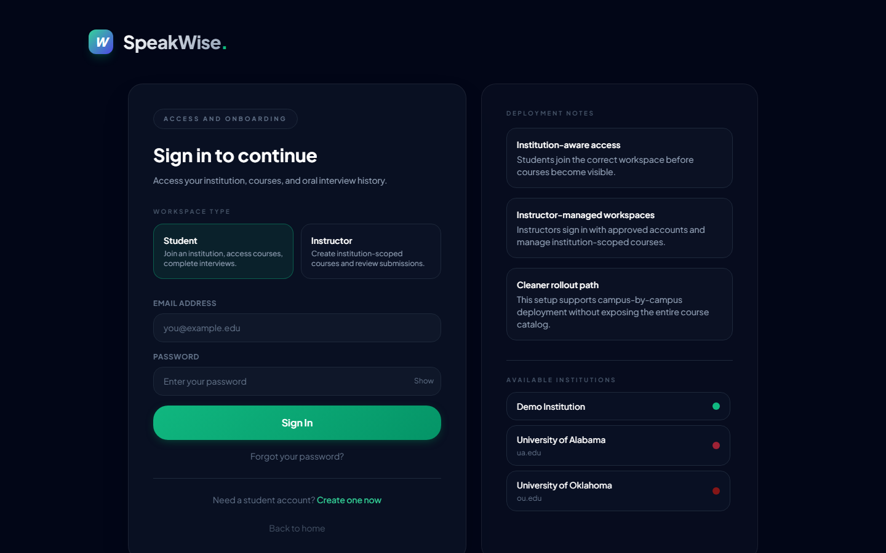
3 Create your student account
Enter your name, pick your institution, and set an email + password (min 6 characters). Your institution choice keeps your courses scoped correctly.
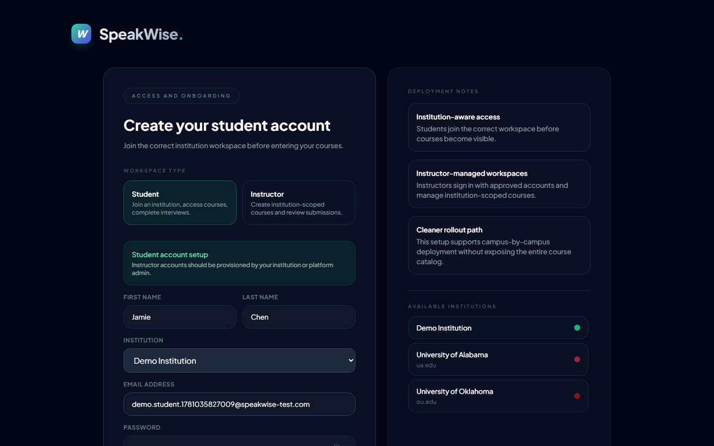
4 Confirm your institution workspace
Enter the institution access code from your instructor (the demo workspace uses DEMO), then Continue to Courses. This keeps course visibility and reporting aligned to the right campus.
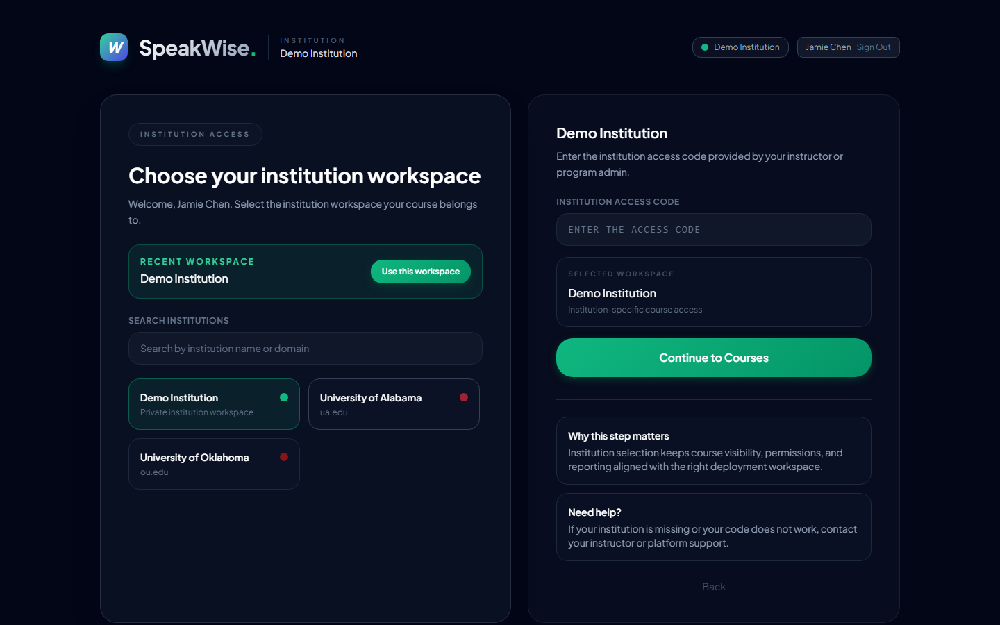
5 Pick your course institution-scoped
Only courses in your institution appear. Select the one your instructor assigned and choose Join.
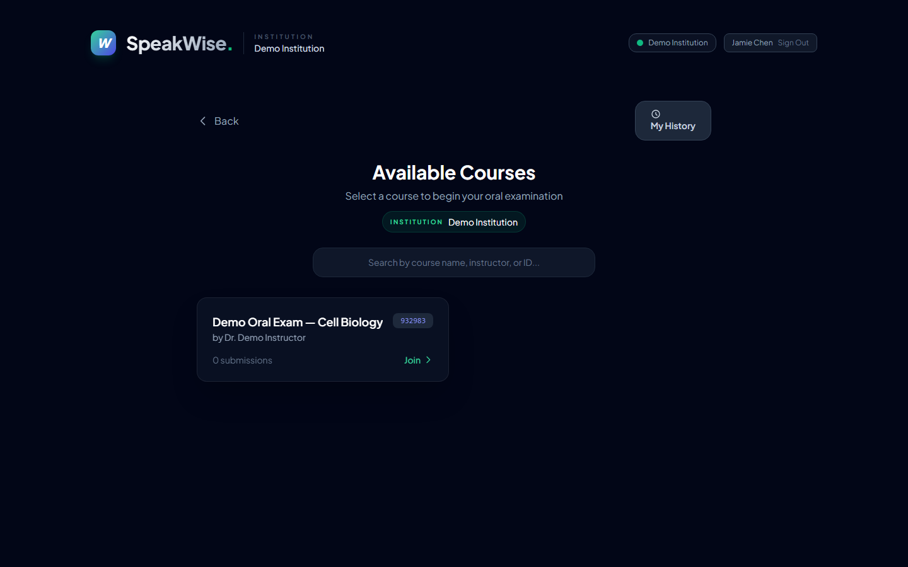
6 Start the oral interview
One calm pre-interview screen: "You're about to start {course}" with your name already filled in (Starting as …). Enter the entry code, run the microphone test, then Start Interview.
During the interview the screen stays deliberately calm — phase cards (Connect → Listen → Respond → Review), a live mic-level meter, supportive prompts if you pause, and a "Done speaking" button.
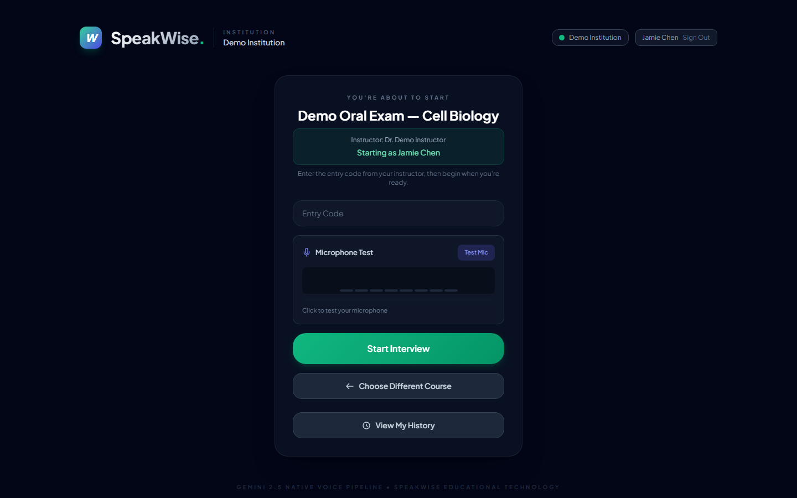
7 Review your results and reflect
A tabbed results view: Overview (score band, summary, strengths, next priorities), Reasoning (reasoning quality + argument/concept map), Peers (anonymous comparison), and Transcript (turn-by-turn with tagged argument nodes).
- If your attempt was flagged for review, a gentle "This result is provisional" note appears — nothing for you to do; your instructor may adjust the score.
Your reasoning is also shown as an interactive argument / concept map — the same radial map your instructor reviews:
1 Open SpeakWise and choose "Instructor"
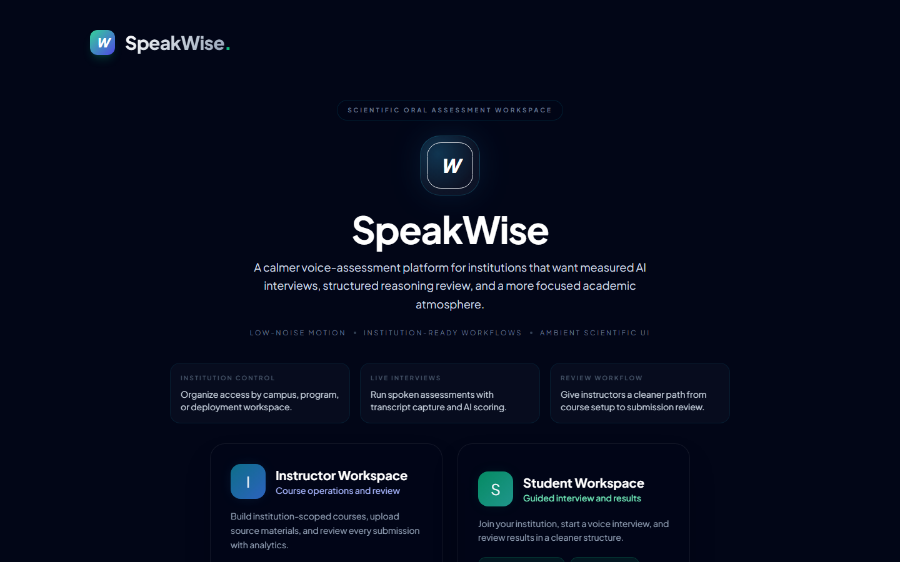
2 Sign in with your provisioned account
Instructors don't self-register — your email is added to the institution's registry (or you're the admin) and you sign in. Your role is granted server-side, so a student can never self-claim instructor access.
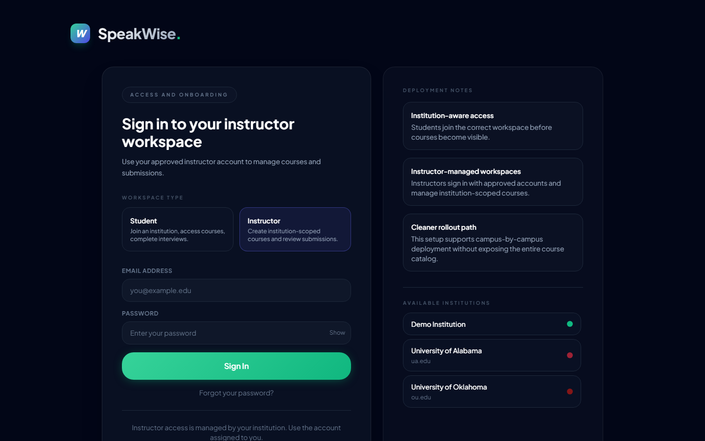
3 Dashboard — your operating layer
The Course Manager Dashboard: institution scope, visible courses, submissions and average score, plus an Instructor guidance panel.
- The "Needs review" card shows, in amber, how many submissions were flagged for a human look (low model confidence, large LLM↔pattern score disagreement, or thin evidence) — your actionable queue, right at the top.
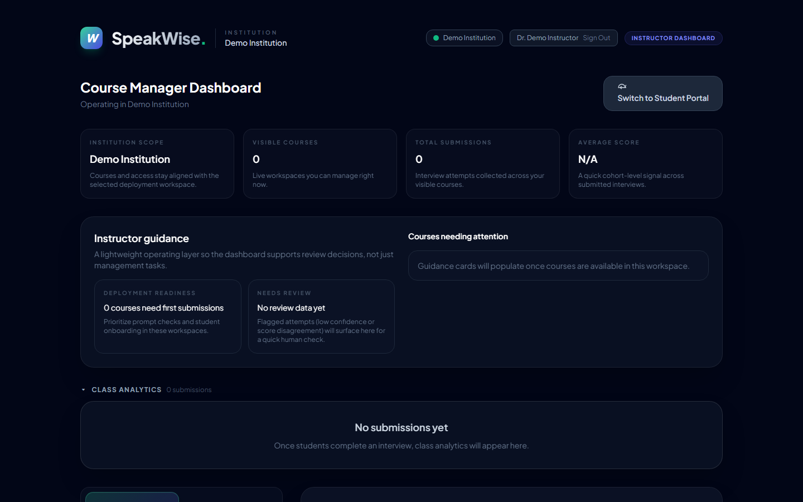
4 Create a test (course)
- Name the course; set the student entry code + an instructor PIN.
- Write or AI-generate the interview prompt; optionally import questions from a
.docx. - Tune interview settings (silence threshold, minimum turn length).
- Save reusable course templates for repeatable rollout.
Courses are scoped to your institution automatically.
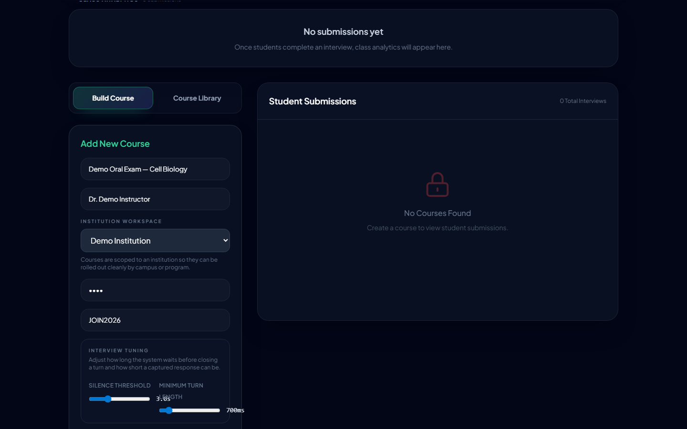
5 Manage students + read analytics professional
- Cohort mean, median, and standard deviation for score and reasoning, with a small-cohort caveat when n < 5.
- Score distribution histogram + score-over-time sparkline; class rubric radar + reasoning-dimension bars.
- A "Flagged for review" triage list (click through to the submission).
- Export CSV / JSON of the cohort — rubric, reasoning, confidence, score-agreement, Toulmin completeness, and analysis/prompt/model version stamps for reproducibility.
- Per-student table with sortable columns and review-status dots (amber = needs review, green = reviewed).
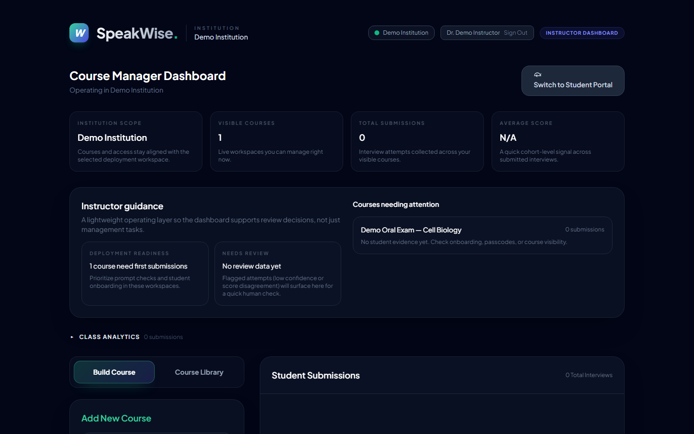
6 Review a submission (human-in-the-loop)
Open any submission for the full evidence view:
- Rubric breakdown radar with per-dimension evidence quotes.
- Reasoning quality bars + a Toulmin completeness strip (Claim/Data/Warrant/Backing/Qualifier/Rebuttal + "to strengthen" guidance).
- A true radial argument / concept map (concentric rings by reasoning depth, children clustered near their parent) with assessment-aligned cues:
- node size by centrality, weak-structure flags ("No Evidence/Warrant/Rebuttal" + dashed-amber unsupported nodes), and a gold ring on concepts cited in the score rationale (map → grade traceability).
- Transcript-linked annotations and a score override + notes workflow — your judgment is recorded on the student's result.
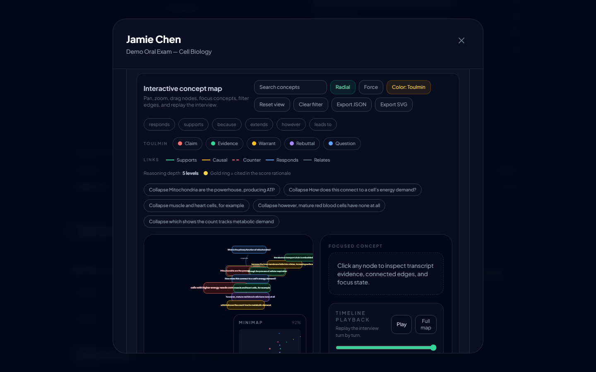
Regenerate the narrated tutorials
ELEVENLABS_API_KEY=... node playwright/narrate.mjs # 1) narration clips + durations node playwright/tutorial.mjs # 2) cursor-following screencast node playwright/mux.mjs # 3) align audio → mp4
Scene scripts and narration live together in playwright/tutorial-scenes.mjs, so the voice-over and on-screen action can't drift apart. Step screenshots come from playwright/walkthrough.mjs (FLOW=student|instructor|both). The instructor email must be in the instructors registry (or be the admin) so the signup trigger grants the instructor role.